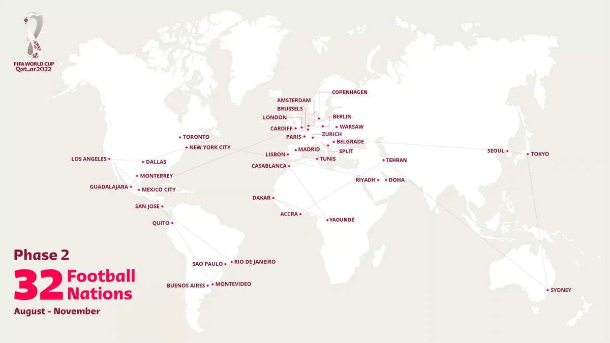

案例发生了什么
谁参与Coca-Cola
发生节点 / 场景2006 起持续多届；全球/本地化；官方长期合作伙伴
传播形式核心符号巡游型；全球本地化型；稀缺体验型
传播核心可口可乐把只能在决赛场上远观的世界杯原版奖杯送到各国，让球迷近距离观看、合影并参加本地活动；品牌不是复刻一座奖杯，而是经营真品移动所产生的稀缺感。

可口可乐把只能在决赛场上远观的世界杯原版奖杯送到各国，让球迷近距离观看、合影并参加本地活动；品牌不是复刻一座奖杯，而是经营真品移动所产生的稀缺感。
2006 年起形成长期项目；2022 年第二阶段访问全部 32 个参赛国，整届巡游覆盖 51 个国家和地区。FIFA 与可口可乐提出在 2030 年前让奖杯走遍 211 个会员协会，并以 Dream Cam 等数字体验扩展未到现场的人群。
MARKETING KNOWLEDGE ROUTER · 营销知识路由器
营销启发卡
把历届经典的记忆点、商业结构和迁移方法放在同一层阅读。 卡片底部按主题连接全站相关案例、经典方法与深度文章。
01核心动作
奖杯装入专机
亲眼看见世界冠军象征的仪式感、国家首次迎来奖杯的荣誉感和球迷朝圣感；奖杯装入专机，在国家与城市之间像火炬一样移动。
02传播与商业机制
饮料消费依赖线下覆盖和共同庆祝
饮料消费依赖线下覆盖和共同庆祝，全球巡游恰好把 FIFA 核心符号、城市活动与可口可乐本地网络连接起来；2006 年起形成长期项目；2022 年第二阶段访问全部 32 个参赛国，整届巡游覆盖 51 个国家和地区。FIFA 与可口可乐提出在 2030 年前让奖杯走遍 211 个会员协会，并以 Dream Cam 等数字体验扩展未到现场的人群。
03可复用的方法
顶级权益中最有力量的资产往往不是 Logo
顶级权益中最有力量的资产往往不是 Logo，而是只有权利方能提供的稀缺物；围绕真品设计路线、仪式和本地伙伴，才能形成持续新闻。
适用条件、风险与证据
- 巡游数据是权利方口径；到访人数、内容触达和销售效果需要按国家另行核验。
- 后续复盘还应补齐发布主体、时间线、真实执行图、媒介范围和结果口径；没有这些证据时，不把行业评价或赛事总热度写成品牌增量。
资料与来源
官方资料与原始来源
市场 / 权益
全球/本地化
官方长期合作伙伴
创意打法
核心符号巡游型；全球本地化型；稀缺体验型
来源按品牌/官方发布、官方账号留存、权威媒体、获奖案例库分层记录；品牌与奖项自报结果不视作独立审计。